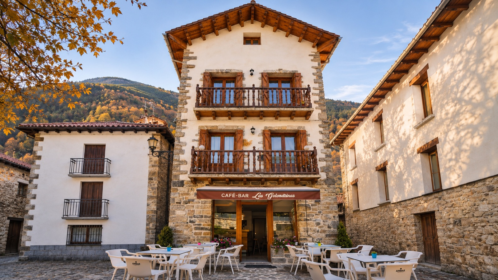
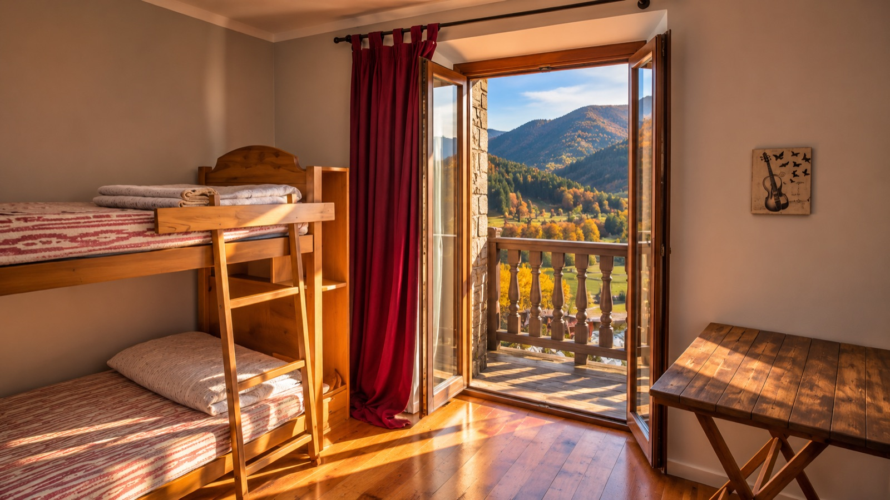
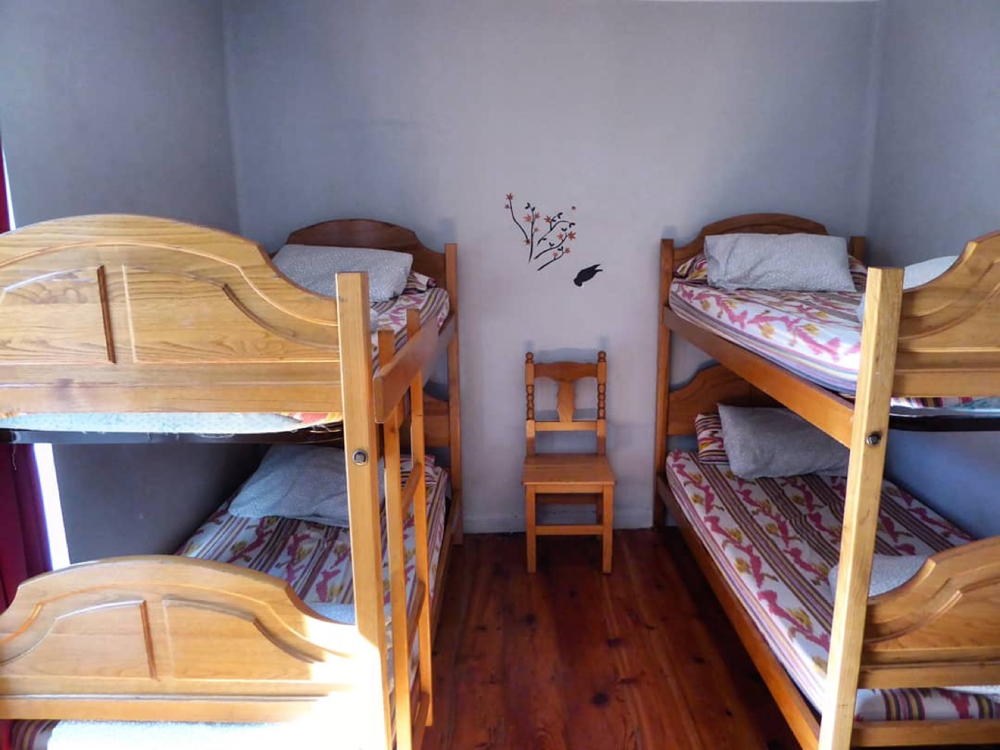
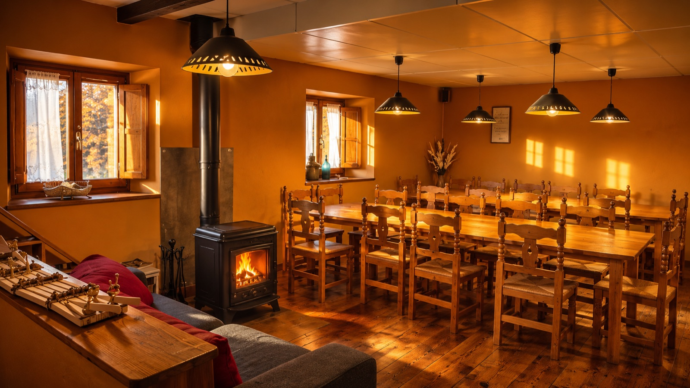
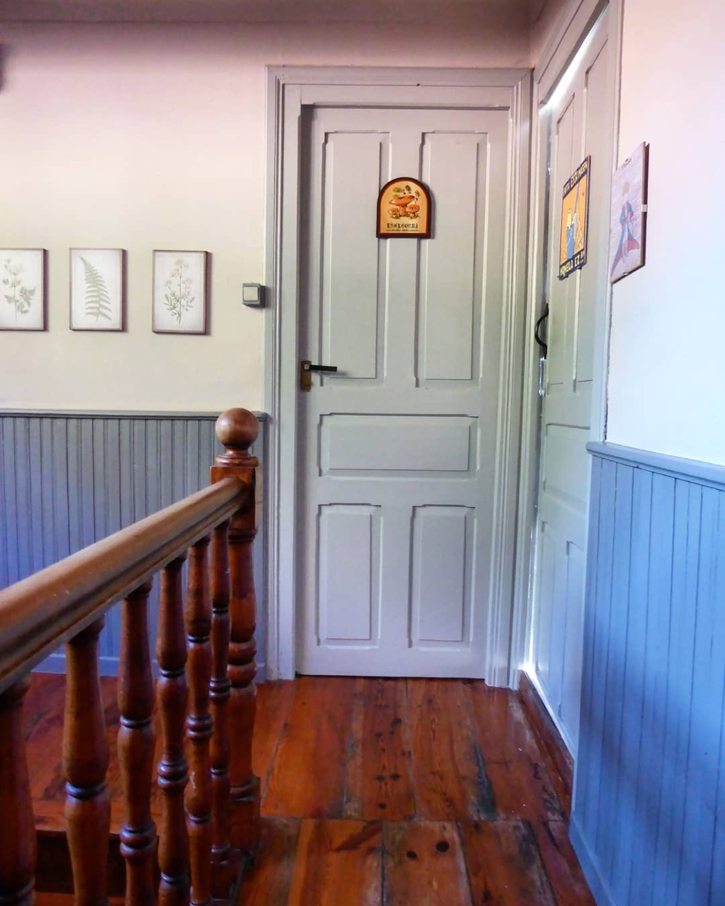
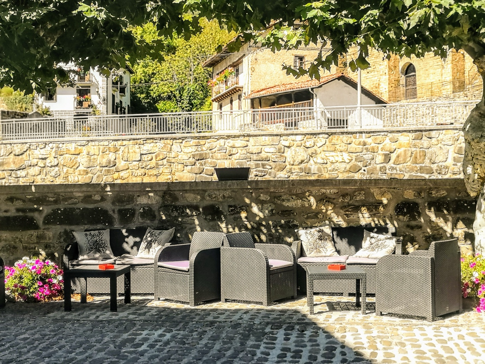
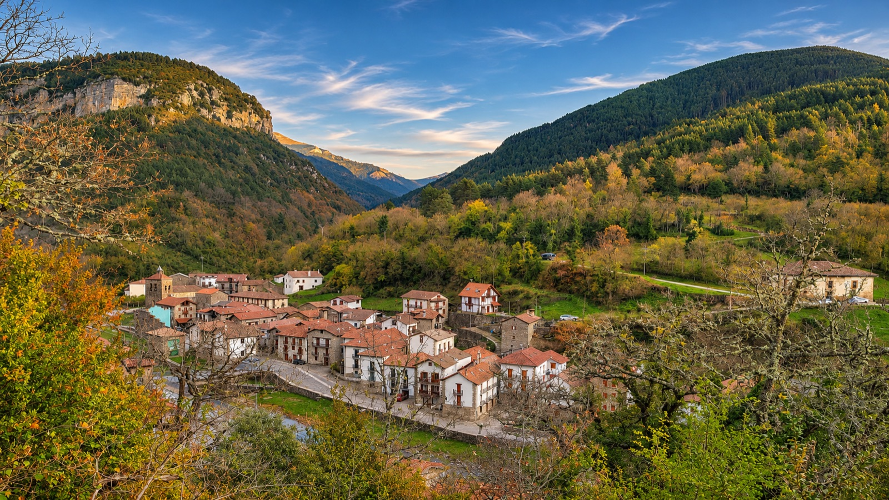

Albergue en Urzainki, Valle de Roncal
Albergue Armaia
Una casa de pueblo en el corazón del Pirineo navarro.
Calle Iriartea, en el centro del pueblo
Aparcas en la misma puerta.
Comedor y estufa de leña
Para reponer fuerzas después del monte.
Tu litera, con vistas al valle.
Desde 33 € la noche. Cancelación gratis hasta 5 días antes. Se paga a la llegada, en efectivo o con tarjeta.
Consultar disponibilidadUna casa con historia
Antigua casa del pueblo, antes conocida como Tamborín. Hoy lleva el nombre de Armaia, uno de los montes que rodean Urzainki, por donde vivía el famoso oso Camille.
- Habitaciones de literas de 2 y 4 plazas, todas con ventana o balcón y calefacción
- Comedor y sala multiusos con un pequeño taller de bicis
- Alojamiento oficial de la Ruta de las Golondrinas: aquí se recoge el forfait

Habitaciones
Literas de madera, sábanas y toallas en alquiler, baños y duchas compartidos fuera de la habitación. Desayunos y cenas con reserva previa.





Cafetería Las Golondrinas
Pintxos caseros, cervezas artesanas y platos sencillos para picar, a dos pasos del albergue.
Su nombre recuerda a las golondrinas: las jóvenes roncalesas que cada invierno cruzaban a pie a Mauleón para trabajar en las fábricas de alpargatas.

El Valle de Roncal desde la puerta
Urzainki es uno de los siete pueblos del valle, de los más tranquilos: pocos habitantes, mucho encanto, su iglesia, su ermita y un crucero renacentista a la entrada.
- Verano
- Senderismo, bici de montaña, rutas micológicas
- Invierno
- Esquí de fondo, alpino y de travesía, escuela de esquí del valle
- Ruta
- La Ruta de las Golondrinas, con salida desde el albergue
- Cerca
- Los siete pueblos del valle y sus museos
Calle Iriartea, Urzainki, Valle de Roncal
En coche
Se accede en coche hasta el centro del pueblo y se aparca en la misma puerta.
A pie
Punto de salida de la Ruta de las Golondrinas: recoge aquí tu forfait.
Llegada
Check-in de 17:00 a 21:30. Pago a la llegada, efectivo o tarjeta.
Te esperamos en Urzainki
Escríbenos o llámanos para reservar o consultar la disponibilidad.